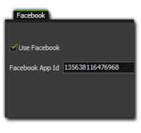
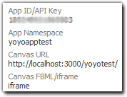
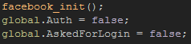
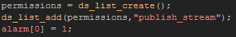

Tutorial
Page 2 of 8
Initialise and Log In
The login process for Facebook through GameMaker:Studio is quite straightforward and requires that you first open the Global Game Settings and goto the "Facebook" tab. There
you should tick the box lablled "Use Facebook" and below that supply your App ID (also called API Key) so that GameMaker:Studio can connect and communicate with the Facebook API.

This key can be found through the previously mention Apps tab on the Facebook Developers page, where you should have a section that looks a bit like this:

Once you have the App Id, and have used it in the GM:Studio Global games Settings, we need to use the function facebook_init() to start the integrated Facebook Api in our game, and while
we are at it we will create a global variable to deal with the possibility that there is no connection available to Facebook, as well as the possibility that the user is already connected (which is very
possible when working with the HTML5 module). So, lets create a new object and call it "obj_Facebook_Init" and in the create event we will add the following:

We also want to set up the permissions that we are going to give the game for posting to Facebook. The permission that we are going to request will mean that the game can post information without
actually having to prompt the user all the time (there are other behaviours that can be used here and set here and they can be found on the
Facebook Permissions Reference page), so the behaviour we want to add is "publish_stream".
This is an extended permission and enables your game to post content, comments, and likes to a user's stream and to the streams of the user's friends. This means that when the login window
comes up, there will be a further window afterwards to request that the user give permission for this to happen during the course of the game.
To add this permission, we need to create a ds_list and add the permission into it (and each further permission should be aded into the list too), however if you do not wish to
include any special permissions you still need to create the ds_list only without adding anything to it. We will also set an alarm to check the status of the
Facebook request so that, should it fail, we can try again. The code will look like this:

You can't test your game yet as we have done nothing but set up the initial conditions for connection. however, we are now going to go to use the global variables created and a special GameMaker:Studio
function to check the Facebook status and take different courses of action based on the returned value.
Click on the Next button to go to the next page of the tutorial.